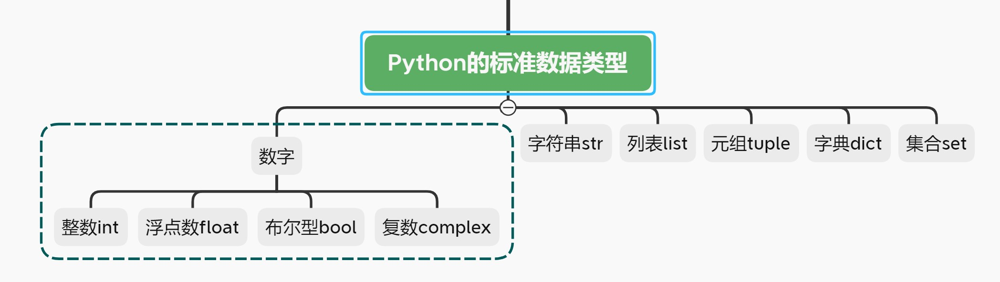
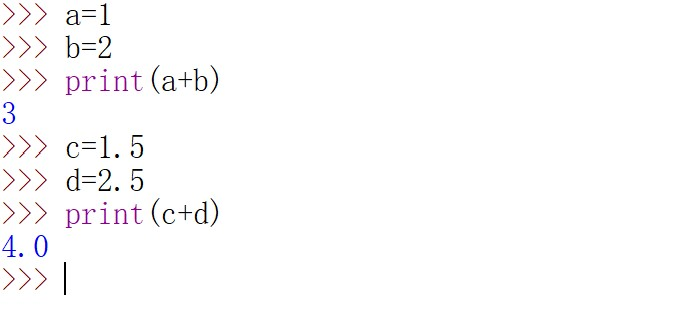
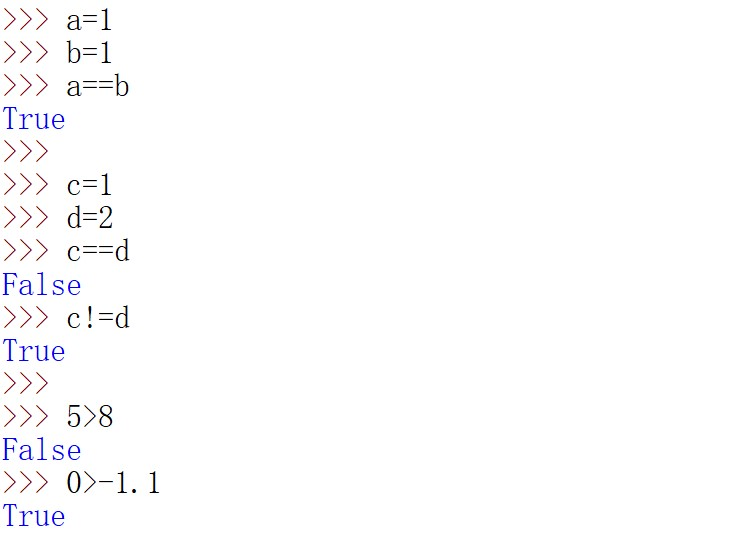

跳动的数字，熟悉又陌生-Python基础连载（六）
开篇
经过前面与字符串的相爱相杀，相信你已经初步掌握了字符串的基本用法。本期将开始学习一个新的数据类型：数字。

在初高中，你已经学习了整数，小数，复数，这些包含在今天要讲的Python的数字类型中，正如上图所示（注：在这里你可以先把浮点数理解成小数，这对于之后的编程几乎没有影响，但随着学习的深入，你可能会发现这种理解是片面的）。
下面来逐个击破~
int & float
这两种类型不用多说，你已经与它们打了多年的交道了。

还记得之前讲过的type()函数吗？它可以用来查看一个变量所属的数据类型。

嗯，意料之中。
在一些其他编程语言，如C语言中，\代表的是整除，比如3/2=1而不是1.5。
以前的Python2也这样干过，但是在Python3中(本系列教程一直在用的Python版本是Python3，还记得第一期的环境搭建内容吗？)，这一规则被更改了，更改后的规则也许更符合大众的逻辑：
\代表我们所认知的普通除法，\\代表整除。
上个栗子：

bool
布尔类型(bool)只有两种取值，True和False
你可能产生疑惑，这是哪门子数字类型啊？这不是英文单词吗！
首先用一个栗子反驳你：

看，可以做数学运算，说明True和False是数字。（在Python中，字符串是不能用来做加减乘除等运算的）
事实上，True和False 分别代表了数字1和数字0。
所以，True+False+1的结果等价于1+0+1的结果。
【扩展】bool继承自int类，是int的子类。所以bool类型唯一的两个取值True和False 自然也可以像int那样进行加减乘除等数学运算。
但请注意，布尔类型的出现并不是为了做加减乘除运算，若真如此岂不是自找麻烦嘛。
布尔类型的真正用途在于：判断真假
判别规则：**空或零为假(False)，其余为真（True）**
1 | 布尔类型判别真假`已经被广泛应用，有许多表达方式可以返回一个`布尔值`，也就是`True`或`False |
第一种用法是使用bool()，看栗子：

第二种用法，见下面的栗子。它常用于判断一个Python表达式（*表达式是运算符和操作数所构成的序列，比如1+5,3<5*）是否正确，可以类比我们讲的一句话是对的还是错的。

上面的栗子中只有一个表达式（比如1>-1.1），当表达式数目多于1时，就牵扯到了Python中的逻辑运算符。
对于纯小白来说，你可能已经发现，本节内容出现了运算符，逻辑运算符，==，!=等等之前没有见过的东西。
所以为了照顾全部的读者，这一块内容等讲到Python中的运算符时再进行详解。
complex
复数类型主要用在科学计算中，平时编程时很少用，这里就举几个栗子以做简单介绍：